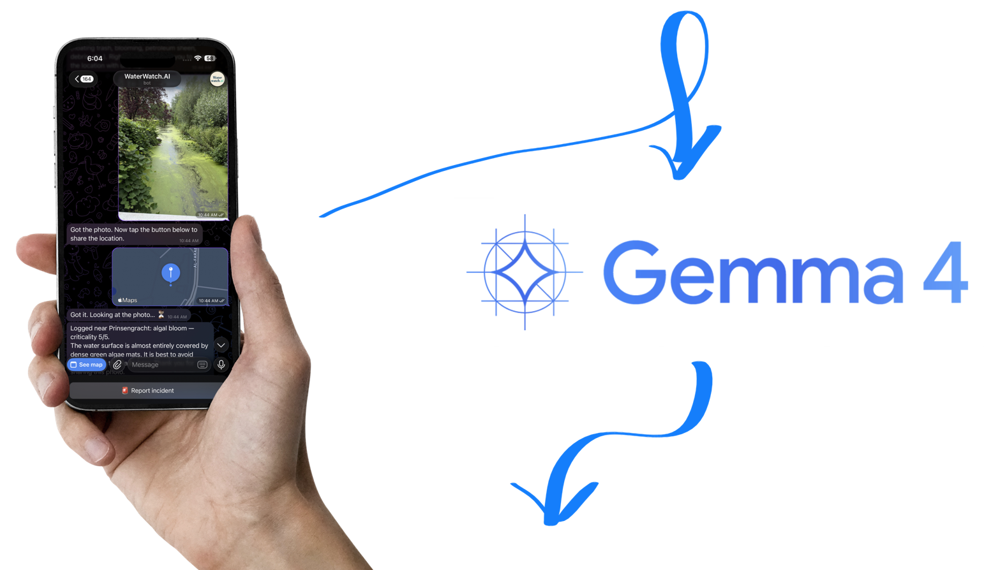

Loading the latest summary…
LIVE · AMSTERDAM
Amsterdam canals water quality, mapped live.
Citizens send photos. AI reads them. The map updates. Mobile-only Telegram bot, no signup.
Powered by Gemma 4


—
Reports · 7d
—
Canals
—
Max severity
Sample data for now — real reports will replace these as citizens submit.
WEEKLY REPORT
This week in the canals.
Reading the signal in the last seven days.
HOW IT WORKS
From phone to map. In seconds.
-
01
Snap and share
Open the Telegram bot on your phone — send a photo of what you see, then share your location with one tap.
-
02
Auto-classified
A vision model reads the photo, identifies the issue and scores how serious it looks.
-
03
Pinned to the map
Reports appear on the map shortly, pinned to the canal's actual name.
GET STARTED
See something? Tell us.
It takes ten seconds. No signup, no app. Mobile only.
Open WaterWatch on Telegram
Scan to open